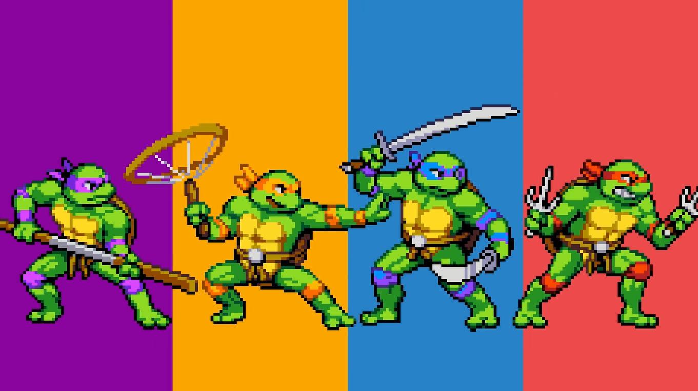

TMNT
Teenage
Mutant Ninja Turtles

The Teenage Mutant Ninja Turtles ready for battle, from left to right in the image you can see, first donatello with his Bō in hands followed by
Michelangelo with his trusty Nunchaku in his side theres Leo with the razor sharp twin katanas and last but not least Raphael with his twin Sai
This is a tribute page to the Teenage Mutant Ninja Turtles, this page was created with the intent to honor the TMNT and to show how cool they are.